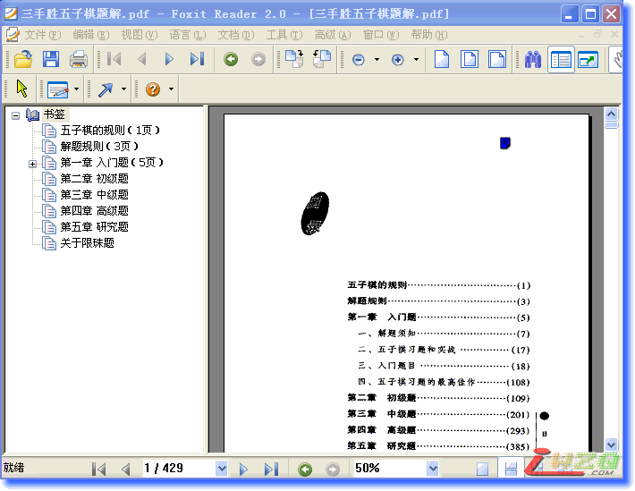

三手胜五子棋题解[电子图书]
首页
五子棋教室
#1 三手胜五子棋题解[电子图书] 作者：有志青年 发表时间：2007-7-6 9:23:12
点击下载

PDF阅读器下载
点击下载
#2 Re:三手胜五子棋题解[电子图书] 作者：青蛙王子 发表时间：2007-7-6 10:35:39
这是初学者的好书啊.大家应该对此书认真的学习
#3 Re:三手胜五子棋题解[电子图书] 作者：daiyue 发表时间：2007-7-6 12:12:18
嗯。我就是靠这本书入门的。
#4 Re:三手胜五子棋题解[电子图书] 作者：黄药师 发表时间：2007-7-6 19:36:44
是不是那个120题的啊？
#5 Re:三手胜五子棋题解[电子图书] 作者：屏蔽 发表时间：2007-7-6 23:38:01
多好的书啊
#6 Re:三手胜五子棋题解[电子图书] 作者：linghu 发表时间：2007-7-9 15:46:05
非常的感谢！正需要这个呢
#7 Re:三手胜五子棋题解[电子图书] 作者：jumbo 发表时间：2007-7-10 12:28:38
我为什么看不了这个书呢？是不是我少下载了什么软件？
#8 Re:三手胜五子棋题解[电子图书] 作者：有志青年 发表时间：2007-7-10 12:31:54
阅读器可以这里下载：
点击下载
#9 Re:三手胜五子棋题解[电子图书] 作者：百合香舍 发表时间：2007-7-13 18:22:42
好东东收啦，感谢！慢慢学习......
#10 Re:三手胜五子棋题解[电子图书] 作者：四方游客 发表时间：2007-7-19 23:14:50
好书，我正在教儿子五子棋，正好用上
#11 Re:三手胜五子棋题解[电子图书] 作者：南京青青子衿 发表时间：2007-7-31 16:07:13
谢谢噢，原来在这里啊！
#12 Re:三手胜五子棋题解[电子图书] 作者：5子~学遥 发表时间：2007-8-1 21:07:09
谢谢了啊!好东西啊!一定好好珍惜!
#13 Re:三手胜五子棋题解[电子图书] 作者：风之铃音 发表时间：2007-8-6 20:52:41
大家应该对此书认真的学习
#14 Re:三手胜五子棋题解[电子图书] 作者：若尘 发表时间：2007-8-11 15:40:47
谢谢啦
#15 Re:三手胜五子棋题解[电子图书] 作者：古道东疯 发表时间：2007-8-21 20:25:26
感谢大师提供 学习中。。。。
#16 Re:三手胜五子棋题解[电子图书] 作者：拾穗的人 发表时间：2007-8-26 23:25:38
不知如何感谢了，刚刚注册就得到了这么多珍贵的资料~~~一定要认真学习
#17 Re:三手胜五子棋题解[电子图书] 作者：caike 发表时间：2007-9-20 21:16:01
正用得上这本书！感谢！！
#18 Re:三手胜五子棋题解[电子图书] 作者：sjdang 发表时间：2007-9-21 10:00:53
好书，我正在教儿子五子棋，正好用上
#19 Re:三手胜五子棋题解[电子图书] 作者：痞子电磁波 发表时间：2007-11-9 19:39:08
好东东收啦，感谢！慢慢学习......
#20 Re:三手胜五子棋题解[电子图书] 作者：淡月霜溪 发表时间：2007-11-15 22:49:34
好东东收啦，感谢！慢慢学习......
#21 Re:三手胜五子棋题解[电子图书] 作者：南京小飞机 发表时间：2008-7-12 16:33:03
显示就绪 但看不起来
#22 Re:三手胜五子棋题解[电子图书] 作者：我爱五子棋伯园 发表时间：2008-10-21 11:03:57
好书，谢谢楼主的共享，辛苦了
#23 Re:Re:三手胜五子棋题解[电子图书] 作者：飞龙掌血 发表时间：2008-11-2 8:29:21
引用：
原文由 sjdang 发表于 2007-9-21 10:00:53 :
好书，我正在教儿子五子棋，正好用上
你儿子多大了?你是怎么教的?有什么好的方法吗?我准备教我女儿,可是不知道怎么去教才7岁的小孩.
#24 Re:三手胜五子棋题解[电子图书] 作者：飞舞落叶 发表时间：2008-11-5 19:38:36
谢谢，新手正在学习
#25 Re:三手胜五子棋题解[电子图书] 作者：牧羊犬 发表时间：2008-11-6 11:48:01
好棒哦！谢谢楼主，我正好需要这个！
#26 Re:三手胜五子棋题解[电子图书] 作者：其怪 发表时间：2008-11-6 15:32:06
嗯，很不错
#27 Re:三手胜五子棋题解[电子图书] 作者：小手冰冰凉 发表时间：2009-3-1 10:12:11
好书啊好书，太感谢老师了
#28 Re:三手胜五子棋题解[电子图书] 作者：星月族 发表时间：2009-12-15 10:37:04
确实不错,正在练习
#29 Re:三手胜五子棋题解[电子图书] 作者：神秘幽灵 发表时间：2009-12-15 22:05:53
下了，慢慢学习
#30 Re:三手胜五子棋题解[电子图书] 作者：博士 发表时间：2009-12-20 18:45:14
提升计算力，收藏了！
#31 Re:三手胜五子棋题解[电子图书] 作者：钱振鹏 发表时间：2010-2-4 17:26:03
都是三手胜吗？三手就成了五？是这样吗？有志
#32 Re:三手胜五子棋题解[电子图书] 作者：春天花会开 发表时间：2010-3-10 11:29:12
本来想打出来 可是太多了
#33 Re:三手胜五子棋题解[电子图书] 作者：岑小鱼 发表时间：2010-3-10 12:46:21
好像是三手后成43胜 个别成活4 抓禁之类另算
#34 Re:三手胜五子棋题解[电子图书] 作者：花瀑葬 发表时间：2010-6-2 10:00:13
感谢啊
#35 Re:三手胜五子棋题解[电子图书] 作者：人更 发表时间：2010-9-26 12:42:01
感谢~ 下载收藏先
#36 Re:三手胜五子棋题解[电子图书] 作者：乌龟猪 发表时间：2011-10-21 23:56:49
 太好了！！神书啊！！~~~ 太好了 太给力了！！感谢楼主
太好了！！神书啊！！~~~ 太好了 太给力了！！感谢楼主
#37 Re:三手胜五子棋题解[电子图书] 作者：吹哥 发表时间：2011-12-17 13:24:55
谢谢拉 弱弱的收下了~~
#38 Re:三手胜五子棋题解[电子图书] 作者：炫飞☆冲四不挡 发表时间：2011-12-17 17:51:35
先下了再说